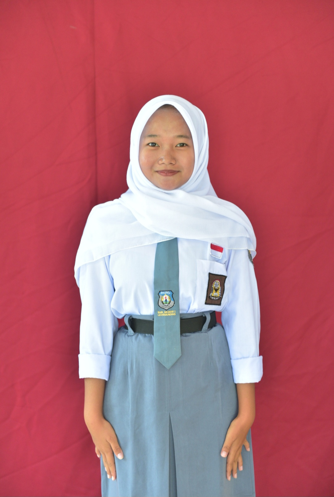

Selamat Datang di Halaman Profil Saya

Pelajar | Teknik Komputer dan Jaringan
| Nama Lengkap | : Nessya vebry yulivia |
| Kelas | : XI TKJ |
| Jurusan | : Teknik Komputer dan Jaringan |
| Tempat, Tanggal Lahir | :Majalengka,14 Februari 2010 |
| Jenis Kelamin | : Perempuan |
| Alamat | :Desa panjalin kidul, Kecamatan sumberjaya,Kab.majalengka |
| Agama | : Islam |
| Sekolah | :SMK Negeri 1 Leuwimunding |
Klik tombol di bawah untuk melihat tugas dan hasil praktikum saya.
Lihat Praktikum